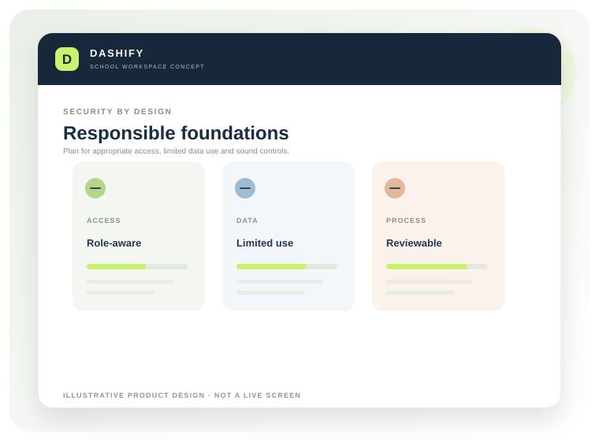

Role-based access
Define permissions around school responsibilities and review who can view, add, change or export information.
School information can be sensitive. Our approach is to define appropriate safeguards, access boundaries and operating responsibilities before considering any live school data.

Illustrative product concept · DASHIFY by BRIZNOVAThese visuals describe the proposed experience and working approach. Final screens, permissions and available features will be confirmed as the product is built and validated with schools.
The following are design requirements and evaluation areas, not claims of completed production controls, certification or independent audit.
Define permissions around school responsibilities and review who can view, add, change or export information.
Design a multi-school architecture that keeps each school’s data logically separated and access-controlled.
Evaluate encryption in transit and at rest, secrets management, secure deployment and controlled system access.
Plan appropriate logs for administrative actions and important changes to records.
Define backup frequency, retention, restoration testing and a recovery process before production use.
Review each messaging, payment or other provider, the data shared and applicable contractual terms.
A controlled path to onboarding.
Demonstrations and early development should use synthetic records wherever possible. Live student or parent information should not be uploaded simply to test a product concept.
Before a pilot uses real information, the school and provider should agree purpose, permitted data fields, access, retention, support, incident handling, export and deletion in writing. Technical safeguards must also be implemented and tested.
Security controls and hosting arrangements are being defined and validated as part of product engineering. No certification, penetration-test result, uptime commitment or compliance audit is claimed on this website.
Share your school’s requirements before any pilot discussion. We will identify what can be answered now and what must be verified before onboarding.